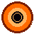

Everything on screen is emergent physics, not faked: rays are traced backwards from the camera through real Schwarzschild geodesics. Here's what each feature actually is.
The thin bright ring is the photon sphere: gravity bends light so strongly that photons can orbit the hole in circles. The ring you see is the last photon orbit, lensed into a near-circle. Its radius in Schwarzschild geometry is r = 1.5 · R₋
The black disk is the shadow of the event horizon — the region where escape velocity exceeds c. In Schwarzschild coordinates the horizon sits at R₋ = 2GM/c² and nothing inside can signal out. The shadow appears ~2.6× wider than the horizon due to lensing.
The glowing band is matter spiralling inward. Because the hole's gravity bends light around itself, you see the lensed underside of the disk arcing above and below the shadow — light from behind the hole wraps around to reach you. This is pure geodesic bending.
Gas orbits near light speed. The side rotating toward you is blueshifted and brighter; the receding side is dimmer and redder. Relativistic beaming boosts intensity by a factor of I ∝ D³, D = 1/γ(1−βcosθ) — that's why one side of the disk visibly blazes.
Real accretion disks glow hotter toward the inside (thin-disk temperature profile T ∝ r−3/4). The inner edge runs white-hot; the outer fades to deep orange. The HEAT slider scales exactly this profile.
Light climbing out of the well loses energy: z = 1/√(1 − R₋/r) − 1. Matter near the horizon looks reddened and dimmer. Combined with beaming it shapes the disk's inner colors.
The innermost stable circular orbit. Inside r = 3R₋ no stable orbit exists — gas must plunge. That dark gap between the ring and the disk's inner edge is the ISCO, a real prediction of the geometry.
Drag to orbit: you're moving the camera around a fixed hole, and the disk's apparent shape (and the lensed arc) changes with viewing angle — the same effect seen in the M87* image. Scroll to zoom changes camera distance; at large distance the ring approaches its true 1.5R₋ size.
Post-processing on top of the physics: grade is a color-science pass + anamorphic letterbox; bloom is a glow around white-hot pixels; dither approximates ordered dithering to snap colors to the 8-color palette. Physics renders first, look is applied second — the sim is unchanged underneath.